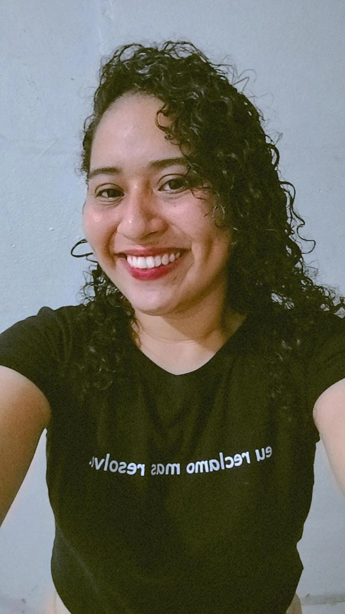
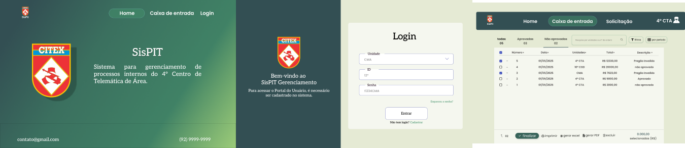
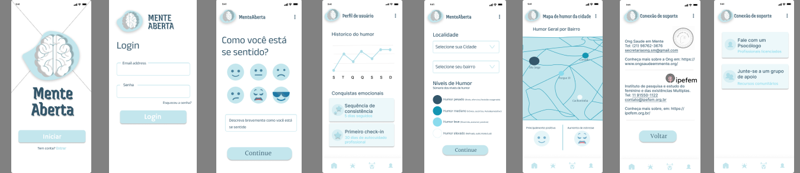
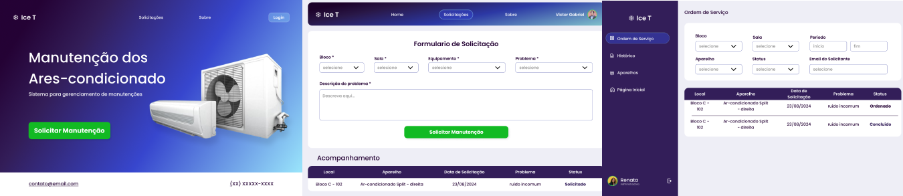
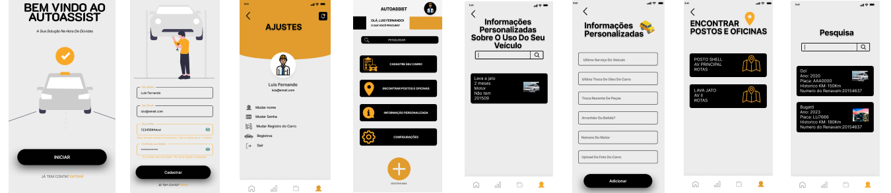
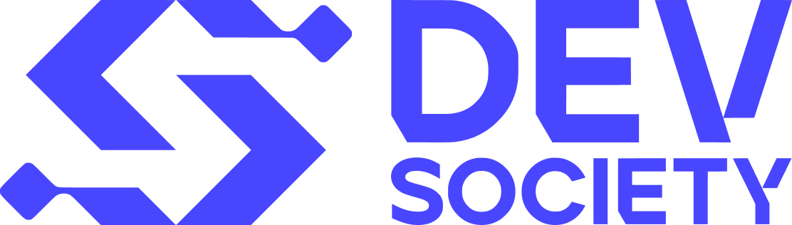
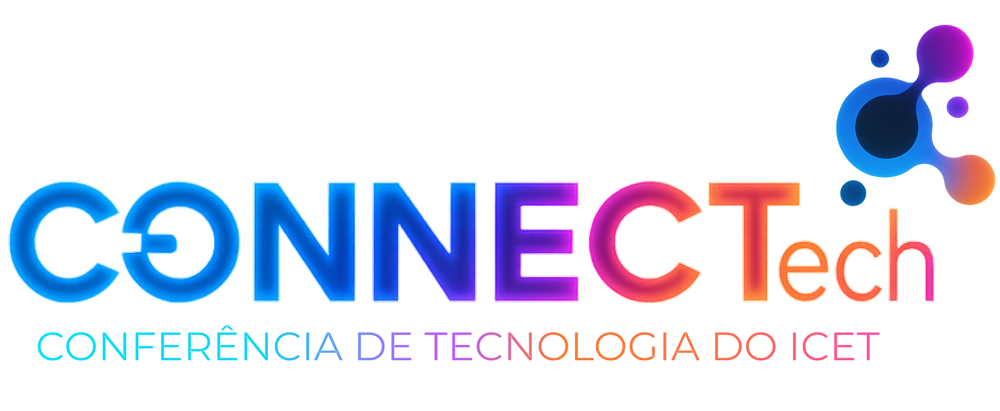
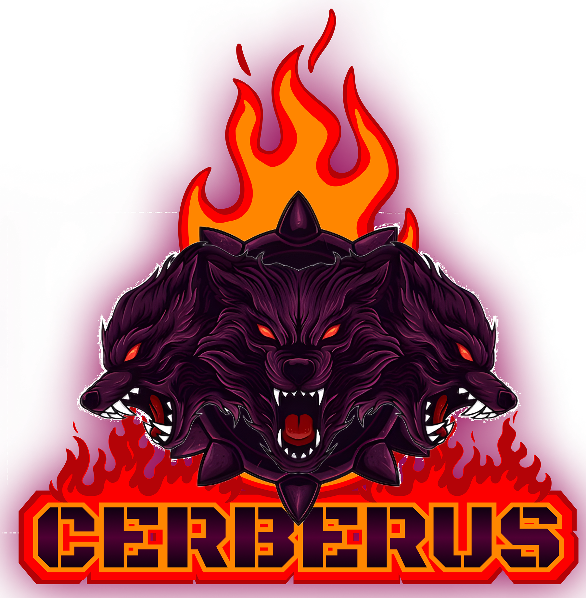

Engenharia de Software & Analista de Inovação

Sou Liliene Picanço Pereira, Engenheira de Software formada pela UFAM e pós-graduanda em Engenharia de Software e Inovação pela PUC Minas. Atuo na intersecção entre tecnologia, inovação e pessoas.
Minha trajetória combina desenvolvimento de software com gestão de ecossistemas de inovação — organizando eventos, fundando comunidades e conectando talentos ao mercado.
Acredito que as melhores soluções nascem da colaboração entre áreas, da escuta ativa e da vontade de transformar problemas reais em produtos de impacto.
Participação ativa na Super Tech Week, contribuindo em workshops, paletras e experiências de inovação. Envolvimento em projetos de acessibilidade com Python (aplicação em Libras), segurança em redes públicas e automação de sistemas de climatização.
Organização e coordenação da Semana Nacional de Ciência e Tecnologia. Responsável pela gestão de equipes, relacionamento com palestrantes e garantia da experiência dos participantes, desenvolvendo habilidades de liderança e comunicação.
Atuação no staff do Python Norte, maior conferência Python da região Norte. Responsável pela logística, transmissão ao vivo e fortalecimento da comunidade tech regional, conectando desenvolvedores e entusiastas de tecnologia.
Estágio em desenvolvimento Full Stack (abr–jun 2025). Desenvolvimento de aplicações web completas com foco em automação e eficiência de processos, utilizando stack moderna JavaScript.
Coordenação de projeto de extensão universitária focado em inovação e tecnologia para a comunidade mais carente de Itacoatiara sem acesso a tecnologia. Desenvolvimento de atividades que promovem a integração entre estudantes e a comunidade, fortalecendo o ecossistema local de inovação.

Sistema de gerenciamento de solicitações desenvolvido com foco em usabilidade e eficiência organizacional. Arquitetura MVC com API REST, garantindo separação clara de responsabilidades e escalabilidade. Interface projetada no Figma com atenção à experiência do usuário. Criado para atuar como o meio mais eficaz de solicitações de equipamentos para os mais diversos departamentos do exército, com o intiuto de otmizar o processo gerado por excel.

Aplicativo mobile voltado para saúde mental, conectando usuários a recursos, profissionais e comunidades de apoio. Desenvolvimento com React Native para cross-platform, Firebase para backend em tempo real e Node.js para serviços complementares.

Sistema web para gestão e monitoramento de equipamentos de climatização. Desenvolvido com stack web clássica e banco de dados relacional, a fim de eliminar gargalos operacionais, reduzir o tempo de resposta de manutenção e garantir o tempo de resposta de manutenção e garantir a eficiência de ativos por meio de testes de integração.

Sistema mobile para assistência e monitoramento de equipamentos de automóveis. Desenvolvido com stack design clássica, seguindo princípios de usabilidade e performance.
Desenvolvimento de um modelo de Inteligência Artificial capaz de mapear e traduzir o alfabeto da Língua Brasileira de Sinais (LIBRAS) em tempo real por meio de imagens coporais. O foco do projeto foi aplicar redes neurais profundas para resolver um desafio complexo de acessibilidade e processamento de imagem, com tratamento de dados, normalização de imagens e análise de de métricas de desempenho do modelo(matriz de confusão e acurácia).

Fundei e presidi o Centro Acadêmico do curso de Engenharia de Software da UFAM, criando um espaço de representação estudantil, eventos técnicos e integração entre a academia e o mercado.

Co-fundação da Connect Tech, iniciativa focada em conectar estudantes de tecnologia com o ecossistema de inovação e oportunidades do mercado, promovendo networking e desenvolvimento profissional.

Co-fundação da Atlética do Instituto de Computação e Tecnologia da UFAM, fortalecendo a cultura e o espírito de comunidade entre os estudantes do instituto.